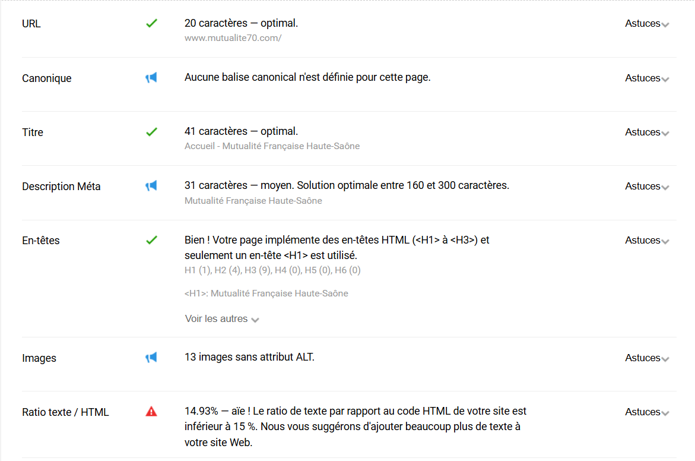

Dans le cadre de ma formation à l’AFIP Formations, j’ai eu l’occasion de réaliser des travaux pratiques axés sur le SEO (référencement naturel). Cela m’a permis de me familiariser avec des outils d’analyse tels que l’extension de navigateur SEOquake. Ces exercices pratiques portaient notamment sur le diagnostic de sites web, y compris ceux de nos entreprises d’alternance, ainsi que sur la création de pages optimisées pour le référencement.
Extrait du diagnostique SEO">